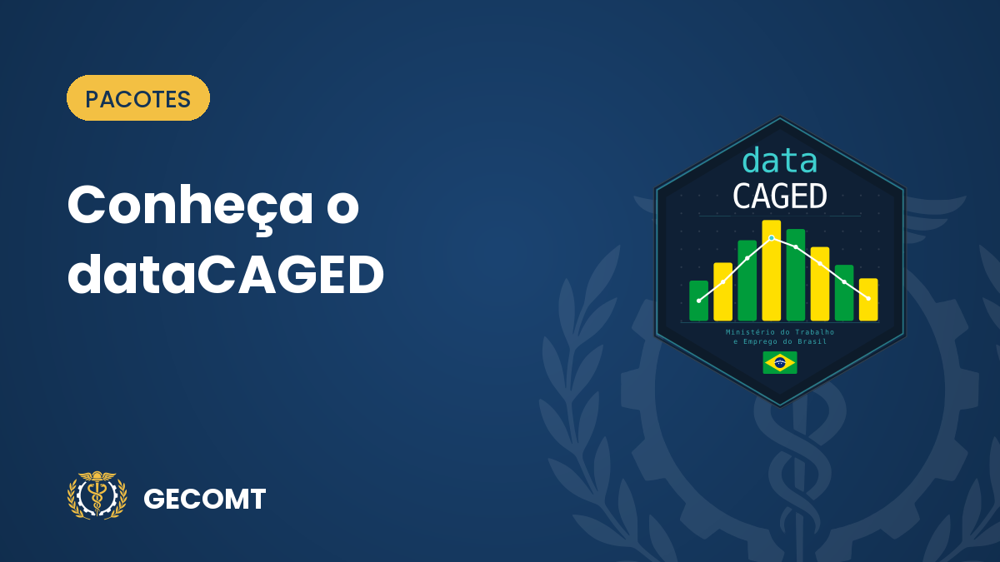
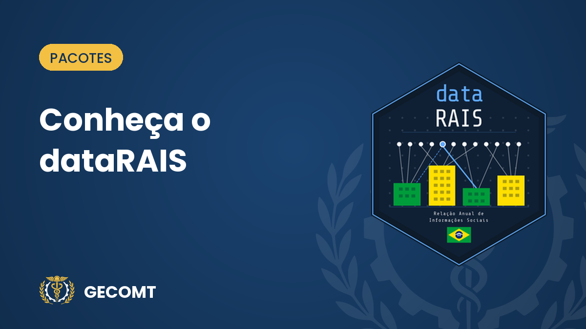
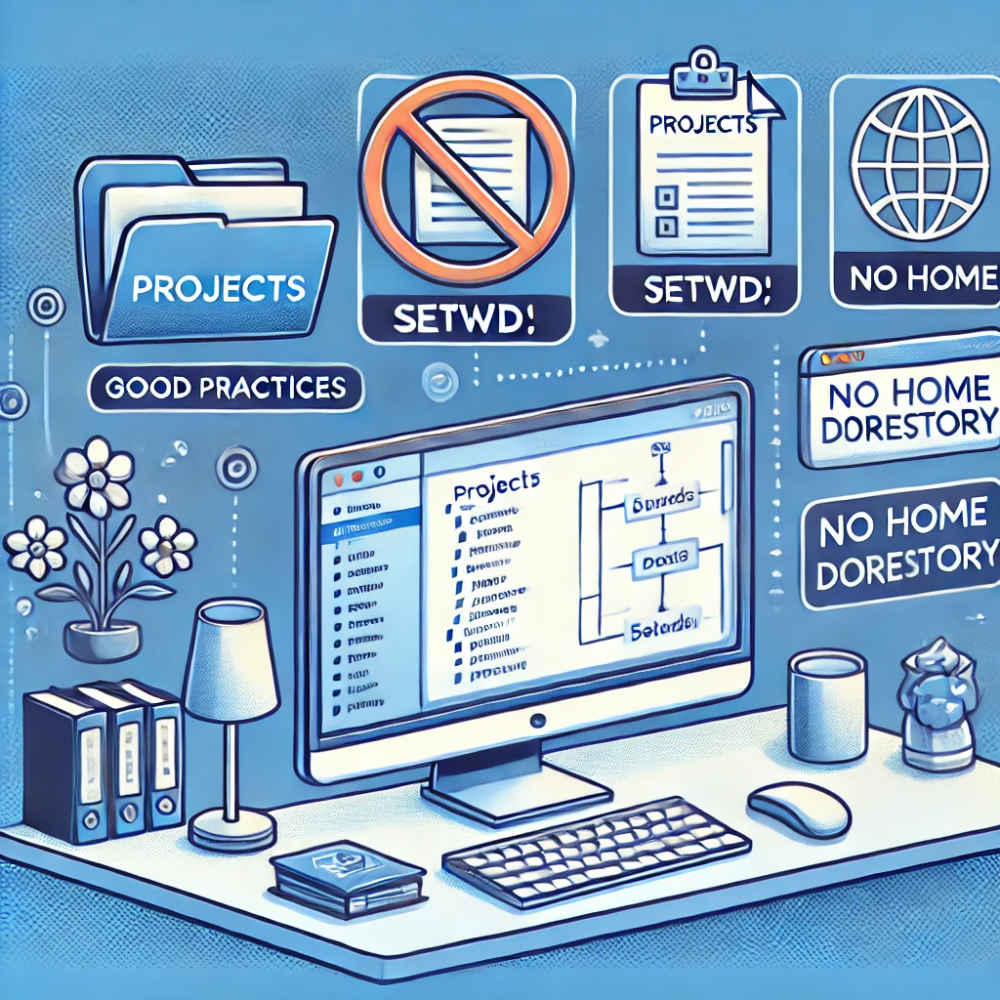

Notas de pesquisa, tutoriais com dados abertos e comentários sobre contabilidade e mercado de trabalho
O Grupo de Estudos sobre Contabilidade e Mercado de Trabalho inaugura um espaço para divulgar pesquisas, tutoriais com dados abertos e reflexões sobre temas contábeis e trabalhistas.

O GECOMT apresenta o dataCAGED, pacote R disponível no CRAN que reduz a uma única função o trabalho de baixar, ler e organizar os microdados do CAGED.

O novo pacote do GECOMT dá acesso aos microdados da RAIS de 1985 a 2025, com variáveis padronizadas entre leiautes e consultas rápidas em DuckDB.
Roteiro introdutório para baixar, armazenar e consultar os microdados do Novo CAGED com o pacote dataCAGED, calculando o saldo mensal de empregos formais no Rio Grande do Norte.
